Центр управления компьютерным парком
Раннее предупреждение отказов для парка Windows-ПК
Агент на каждом компьютере, сервер в вашей сети и один экран: видно, какая машина начала сдавать, почему и сколько времени на реакцию. На том же сервере — принтеры, учёт печати и карта сети.
Рабочий стенд — настоящий сервер J-Space с демо-парком: 10 компьютеров, 3 принтера, 16 узлов сети, 45 дней истории. Только чтение — смело нажимайте всё; после паузы стенд просыпается чуть дольше.
Ваша сеть · телеметрия хранится только здесь
Источники · сбор
- Windows-ПК с агентомполный срез — каждый час, связь — каждые 5 минут
- ПринтерыSNMP, IPP, HTTP — каждые 15 минут
- Коммутаторы и точки доступаSNMP, LLDP, CDP — раз в час
Сервер J-Space · анализ
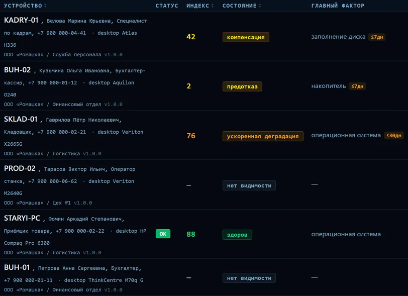
- достоверность
- движки
- вердикт
Модули · результат
- 01Здоровье компьютера5 состояний, главная причина, срок реакции
- 02НакопителиSMART, журнал NVMe, износ и резерв
- 03Сбои WindowsBSOD, внезапные перезагрузки, журнал событий
- 04Прогнозыдата по физике: место, резерв NVMe, тонер
- 05Учёт паркажелезо, сертификаты, отделы, 2 года истории
- 06Принтеры и печатьтонер, счётчики, каждое задание
- 07Карта сетиузлы, связи, журнал изменений
- 08ВнедрениеGPO и RMM, самообновление с подписью
- 09ИнтеграцииZabbix, API, выгрузки CSV
Обзор
Весь парк на одном экране
Каждая строка — компьютер с вердиктом: состояние, индекс здоровья от 0 до 100, главный фактор и срок реакции. Сверху — плитки парка: тренды, связь, сертификаты и версии агентов.
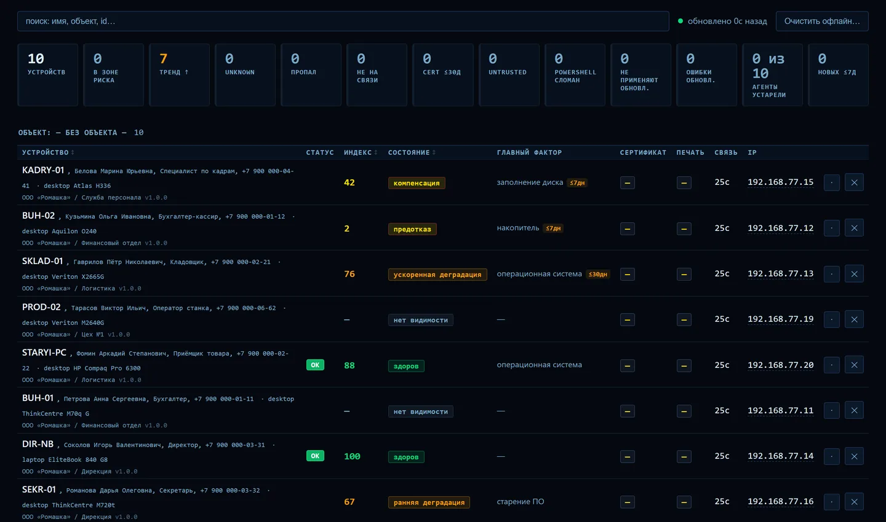
- Состояние и индекс здоровья — по каждой машине, цветом и числом.
- Главный фактор и срок реакции — словами, рядом с машиной.
- Плитки парка: тренды, связь, сертификаты, обновления агентов.
Агентная система
Лёгкий агент на чистом Python ставится одной командой и сам обновляется. Сервер принимает его данные, проверяет и хранит у вас.
Вердикт вместо графиков
Десятки показателей сводятся к состоянию машины, главной причине и действию: «снять образ данных, планировать замену накопителя».
Всё в одном месте
Компьютеры, принтеры, печать, сертификаты и сеть — на одном сервере, в одном файле базы, на одном экране.
01Здоровье компьютера
Пять состояний, главная причина и срок реакции
J-Space оценивает каждую машину по трём координатам — повреждения, устойчивость, полнота данных — и ставит её на одну из пяти ступеней. Для трёх старших он назначает срок реакции и пишет, что сделать.
- Каждое решение подписано: какое правило подняло ступень и какой механизм главный.
- Ступень опускается только после 48 часов подтверждённого улучшения — вердикт спокойный, без мигания.
- Пороги опираются на полевые исследования отказов дисков: Backblaze, Google, спецификацию NVMe.
- Когда данных мало, вердикт так и говорит — UNKNOWN; при частичных данных уверенность оценки снижается, и это видно на экране.
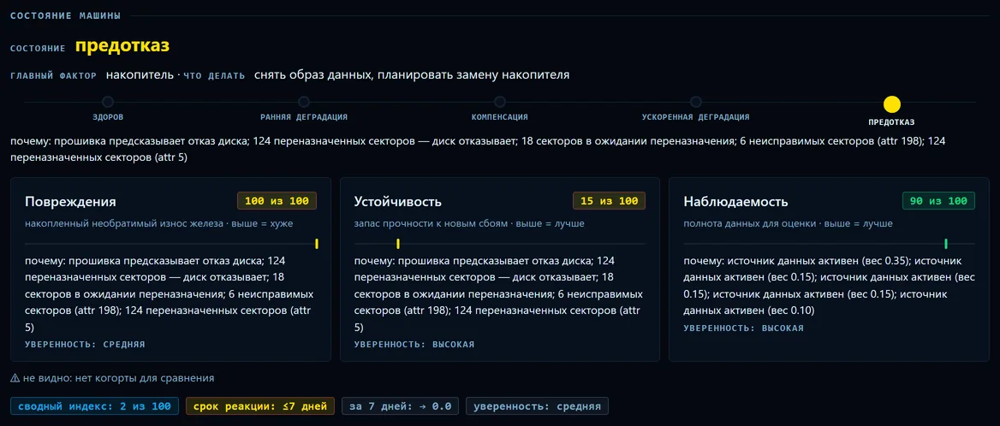
Пять состояний и что они значат
| Состояние | Что это значит | Типичные улики | Срок реакции | Что сделать |
|---|---|---|---|---|
| здоров | Повреждения минимальны, данных достаточно для оценки. | — | — | Работать спокойно. |
| ранняя деградация | Первые признаки, запас прочности большой. | Первые следы износа накопителя, старение ПО, мало места на системном диске. | по плану | Присмотреться; при старении ПО — перезагрузка. |
| компенсация | Машина справляется ценой ресурса. | Диск переназначает секторы или расходует резерв NVMe, растут задержки и повторы чтения. | 90 дней | Снять образ данных, запланировать работы. |
| ускоренная деградация | Повреждения растут. | Появились ожидающие и сбойные секторы, резерв NVMe ушёл за порог, свежие события повреждения в журнале, BSOD в разные дни. | 30 дней | Заменить накопитель в плановом порядке. |
| предотказ | Отказ близок. | Диск сам сообщает о скором отказе, NVMe переключился на «только чтение», BSOD вслед за повреждением диска. | 7 дней | Снять образ данных сейчас, заменить накопитель. |
| UNKNOWN | Данных мало для честного вердикта. | Агент молчит, SMART закрыт, источник дал сбой. | — | Проверить агента и доступ к SMART. |
Повреждения
Накопленный износ железа: переназначенные и сбойные секторы, расход резерва NVMe, события повреждения в журнале. Больше — хуже.
Устойчивость
Запас прочности к новым сбоям: что осталось у накопителя, как стареет ПО, куда ведёт траектория ресурса. Больше — лучше.
Полнота данных
Какая доля каналов на связи: SMART, журнал событий, показатели, история тренда, инвентарь, когорта той же модели. Больше — лучше.
Как рождается вердикт
- Телеметрияагент, принтеры, сеть
- Достоверностьпришло ли и правдоподобно ли
- Движкинакопитель, события, ОС, ресурс
- Три координатыповреждения, устойчивость, полнота
- Ступеньпять состояний и UNKNOWN
- Срок реакции7, 30 или 90 дней
- Действиесловами, для инженера
02Накопители
SMART и NVMe: как стареет каждый диск
Агент читает SMART напрямую — 21 атрибут ATA, флаг предсказания отказа и журнал здоровья NVMe — плюс температуру, наработку и задержки чтения и записи.
- SMART ведёт оценку, задержки её подтверждают: медленный диск сам по себе остаётся на ранней ступени.
- Задержки — медиана и 95-й перцентиль; зависания от секунды учитываются отдельно.
- Замена диска распознаётся по серийному номеру: счётчики нового диска начинаются заново.
- Серийный номер превращается в хеш SHA-256 ещё на компьютере.
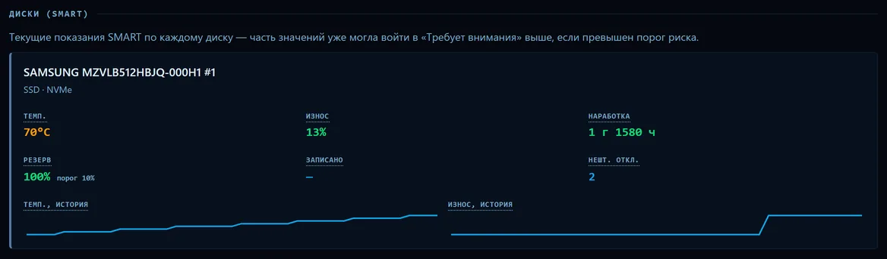
ATA / SATA
- 5
- Переназначенные секторы
- 197
- Секторы в ожидании переназначения
- 198
- Сбойные секторы офлайн-проверки
- 194 · 9
- Температура и наработка
- флаг
- Прошивка сообщает о скором отказе
NVMe
- Spare
- Резерв и порог производителя
- Used
- Износ по оценке самого диска
- Warning
- Флаги Critical Warning
- Errors
- Ошибки носителя
- Written
- Объём записи и аварийные отключения
03Сбои Windows
BSOD, внезапные перезагрузки и цепочка событий диска
J-Space разбирает журнал Windows по числовым кодам событий, поэтому русская и английская система дают одинаковый результат. Сбои он считает по дням, а события диска выстраивает в цепочку — от первых повторов чтения до краха.
- BSOD оценивается по повторяемости в разные дни, а BSOD вслед за повреждением диска ведёт прямо к предотказу.
- Kernel-Power 41 — сигнал-усилитель: он подкрепляет другие улики; ошибки WHEA видны в истории машины, а оценка риска обходится без этих ошибок.
- Время загрузки сравнивается с машинами той же модели: «дольше, чем у 90 % похожих компьютеров».
- Индекс стабильности Windows учитывается с поправкой: это закрытая эвристика Microsoft.
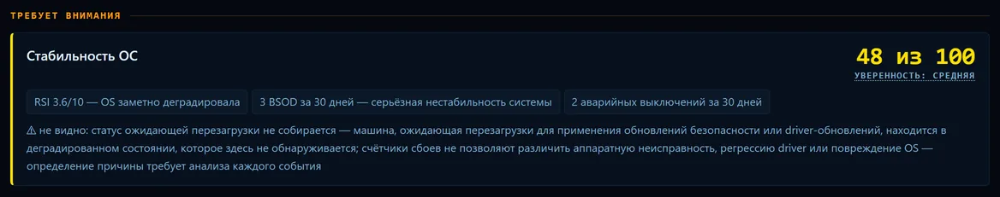
- 153 · 129Повторыдиск повторяет операции ввода-вывода
- 7 · 51 · 55Повреждениясбойные блоки, ошибки страниц, файловая система
- 41 · 1001 · 6008Крахвнезапная перезагрузка, BSOD, аварийное выключение
04Прогнозы
Дата появляется там, где у ресурса есть физический предел
Свободное место на системном диске, резерв NVMe и тонер расходуются предсказуемо. J-Space строит по каждому из этих ресурсов тренд и называет дату, когда ресурс дойдёт до предела, — вместе с основанием прогноза.
- Срок реакции 7, 30 или 90 дней — окно для действий по состоянию машины; дата прогноза — отдельная величина.
- Износ SSD идёт траекторией до 100 % расчётного ресурса — у PROD-01 на стенде это около 97 дней. По спецификации NVMe 100 % означает исчерпанный расчётный ресурс, а момент отказа — отдельный вопрос.
- При замене диска ряд начинается заново: прогноз строится по истории текущего диска.
- Место на системном дискедо 5 % свободного
- Резерв NVMeдо порога производителя
- Износ SSDдо 100 % расчётного ресурса — траекторией
- Тонердо нуля, по каждому картриджу
Устойчивый тренд
Наклон Тейла–Сена — медиана наклонов между всеми парами точек. Один случайный выброс тонет среди сотен пар, и наклон остаётся прежним.
Проверка значимости
Для свободного места тест Манна–Кендалла отличает настоящий рост от шума: тренд признаётся при уровне доверия 95 %.
Честные условия
Дата по месту на диске — после 72 часов истории и минимум шести показаний; резерв NVMe считается по скорости расхода за последние 7 дней, тонер — по показаниям за 3 дня и больше. Прогноз всегда называет ресурс и предел.
05Учёт парка
Карточка каждой машины и история за два года
J-Space ведёт учёт оборудования и хранит историю: дневные сводки — 2 года, задания печати — 400 дней, события — 90 дней, подробные показатели — 30 дней. Сроки хранения настраиваются.
- Карточка машины: модель, процессор, модули памяти, диски, BIOS, версия Windows, проблемные драйверы, ожидающая перезагрузка.
- Сертификаты: сроки действия по каждой машине, плитка «истекают за 30 дней», напоминание пользователю за 14 дней.
- Защита: антивирус и свежесть его баз, дата последнего обновления Windows, BitLocker, TPM, Secure Boot и активация.
- Организации и отделы: коды едут вместе с телеметрией, названия живут в справочнике и применяются ко всей истории.
- Статистика парка: распределение по состояниям, тепловая карта, топ ухудшений, рискованные модели; на карточке машины — аномалии её модели и площадки.
- Журнал исходов: инженер отмечает, чем закончилась тревога, — основа будущей калибровки.
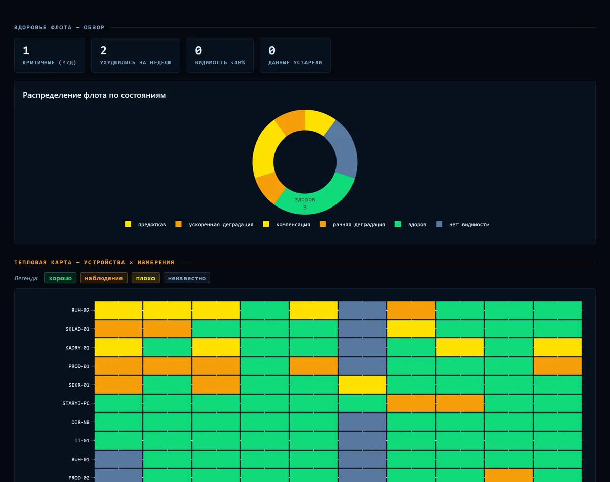
06Принтеры и печать
Тонер, счётчики и каждое задание печати
Сервер сам опрашивает принтеры каждые 15 минут — по SNMP с запасным путём через IPP и HTTP. Агенты передают каждое задание печати: компьютер, принтер, страницы, пользователь.
- Принтеры любых марок по стандартному Printer-MIB: общий счётчик страниц, расходники, лотки и состояние.
- Прогноз тонера: сколько дней осталось при текущем расходе.
- Аналитика по дням, принтерам, людям и отделам; две выгрузки CSV.
- В демо-парке за 45 дней — 12 680 страниц, в среднем 282 в день.
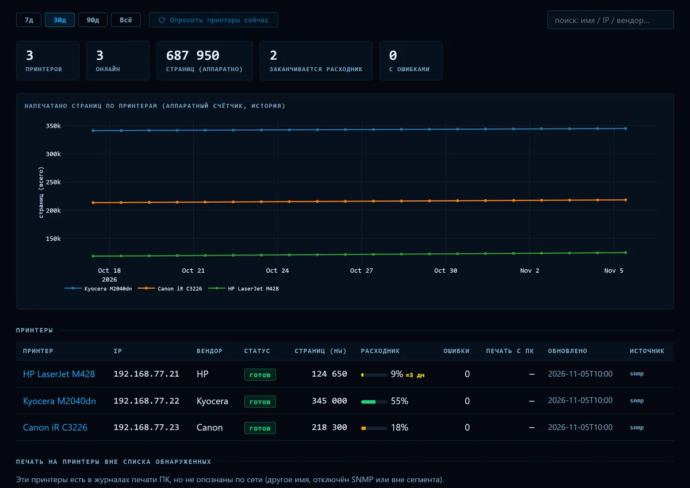
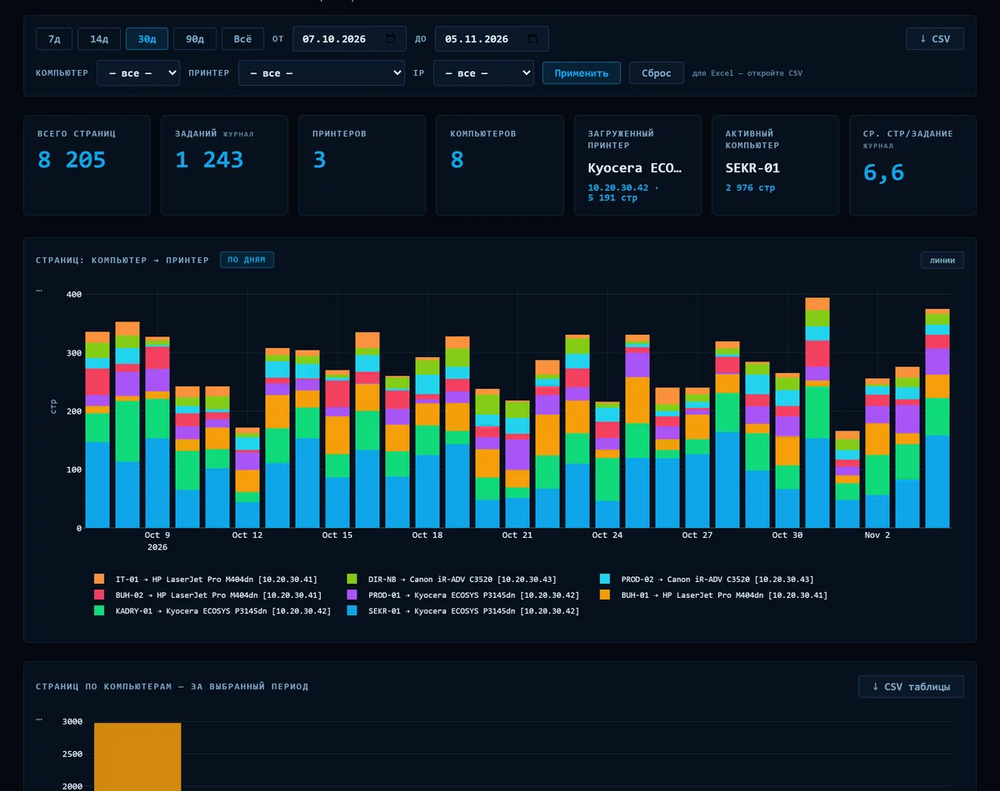
07Карта сети
Узлы, связи и журнал изменений сети
Карта собирается из SNMP, LLDP, CDP, таблиц коммутаторов и данных агентов: провод и Wi-Fi, уверенность каждой связи. Срез топологии — каждый час, машина времени хранит 500 срезов.
- Журнал изменений: новый или пропавший узел, новая или пропавшая связь, смена IP-адреса.
- Доступность узлов — каждые 10 минут; выгрузка карты в PNG и CSV.
- Адаптеры MikroTik, UniFi, Redfish и NetFlow — только чтение.
- В демо-парке — 16 узлов и 25 связей.
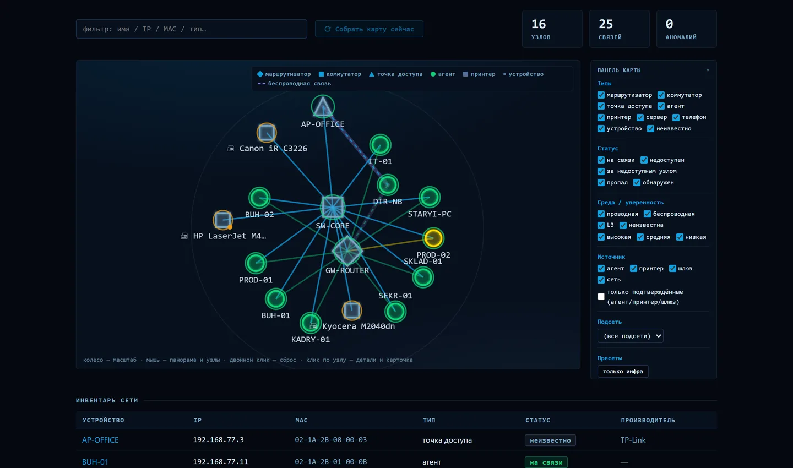
08Внедрение
Одна команда на компьютер, обновления — сами
Агент ставится из скрытой общей папки одной командой с кодами возврата для GPO и RMM. Дальше он раз в час проверяет новую версию и обновляется сам: пакет подписан Ed25519, подпись и контрольная сумма сверяются до установки.
- Страница «Развёртывание» готовит строки установки для каждой организации и отдела.
- Сборки для 64-битной Windows 10 и 11 и 32-битной Windows 10; PowerShell 5.1 уже встроен в систему.
- Агент на чистом Python: одна папка, задача планировщика и значок в трее.
- Сервер на Windows или Linux с Python 3.9+; резервная копия — одной командой
backup.bat.
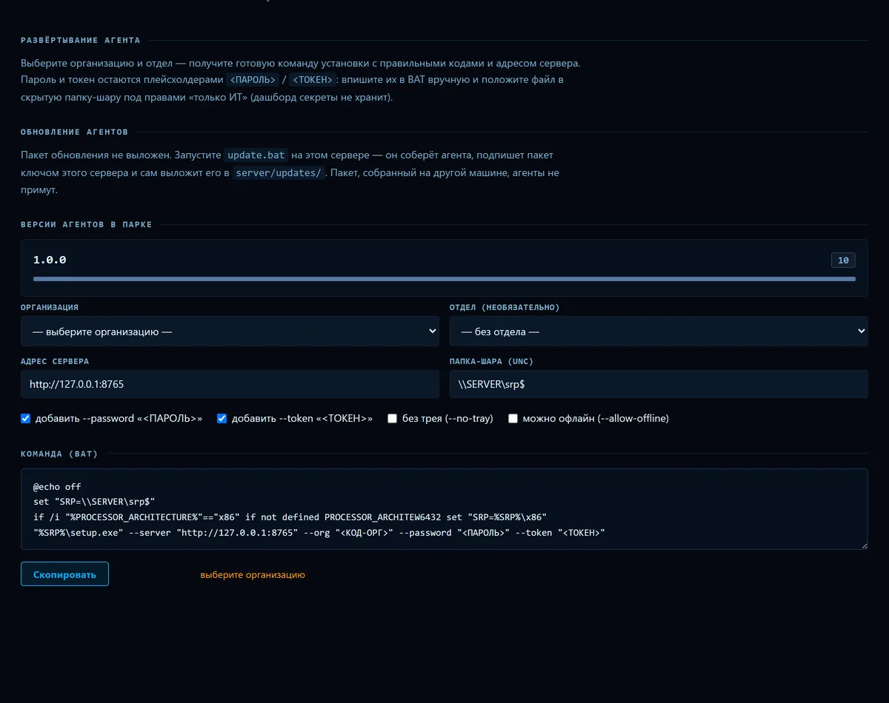
:: GPO, RMM или двойной клик техника
\\server\srp$\setup.exe --server http://192.168.1.10:8000 --org 101 --dept 7 --token <токен>
0готово2параметры3сервер вне связи или отклонил токен4копирование и права5задача и автозапуск
09Интеграции
Zabbix, API и выгрузки
Вердикт J-Space приходит в Zabbix четырьмя значениями на компьютер каждые 5 минут: состояние, риск 0–100, срок реакции в сутках и главный фактор. Остальное доступно через API и выгрузки.
Инструкция по Zabbix- Zabbixтраппер каждые 5 минут: состояние, риск, срок реакции, главный фактор; шаблон для импорта — в репозитории
- API /api/v141 маршрут: машины, метрики, печать, принтеры, карта сети
- ВыгрузкиCSV по печати и сети, PNG карты сети
Экраны
Как это выглядит
Настоящие экраны рабочего стенда. Листайте вбок; те же страницы открываются в снимке экранов прямо на этом сайте.
Парк. Таблица машин с вердиктами и плитки парка. Карточка машины. BUH-02: предотказ, главный фактор, действие и три координаты. Диск NVMe. DIR-NB: износ, резерв и порог производителя, температура, наработка. Стабильность ОС. SKLAD-01: индекс стабильности Windows, BSOD и аварийные выключения за 30 дней. 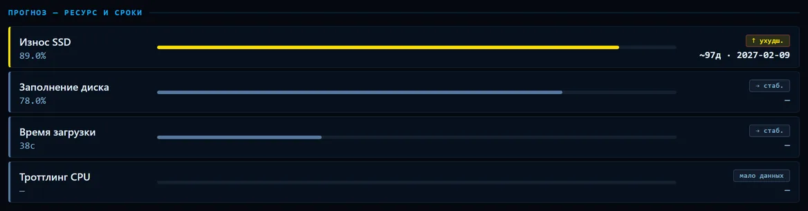
Прогноз. PROD-01: траектория износа SSD — около 97 дней до 100 % паспортного ресурса; это предел ресурса, отдельный от даты отказа. Здоровье парка. Распределение по состояниям и тепловая карта «машина × измерение». Принтеры. Тонер, счётчики страниц, расходники и прогноз. Печать. Страницы по дням, принтерам, людям и отделам. Карта сети. 16 узлов и 25 связей демо-парка, провод и Wi-Fi. 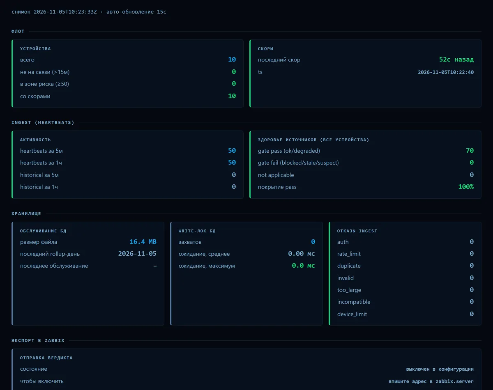
Пайплайн. Достоверность источников и полнота данных по машинам. Развёртывание. Готовые строки установки агента по организациям и отделам.
Безопасность и данные
Данные остаются в вашей сети
J-Space работает на вашем сервере и хранит всё в одном файле SQLite — без подписок, регистрации и лицензионных ключей.
Свой сервер
Телеметрия хранится только у вас; облако и учётная запись производителя для работы J-Space лишние.
Хеш вместо серийного номера
Серийные номера дисков превращаются в SHA-256 ещё на компьютере.
Только локальные адреса
Из сетевых адресов агент передаёт только локальные: частные диапазоны RFC1918 и служебные link-local.
Сертификаты — только метаданные
Владелец, издатель, отпечаток и сроки действия; закрытые ключи остаются на машине.
Доступ — только из вашей сети
Снаружи сервер отвечает 404 на всё, кроме трёх путей агента с верным токеном; дашборд виден только из локальной сети.
Подписанные обновления
Пакет агента подписан Ed25519, токены приёма и администратора разделены, TLS — через обратный прокси на этом же сервере.
Как создаётся J-Space
Современная разработка и строгая проверка
J-Space проектируется и пишется с ИИ-инструментами на каждом шаге — от исследования до ревью кода. Решение о здоровье машины при этом принимает прозрачная арифметика: каждое правило и каждый фактор подписаны.
4 500+ автотестов
Покрытие кода сервера — около 93 %; плюс статический анализ, проверка типов и проверка безопасности на каждом изменении.
Проверка на живых машинах
Сборщики данных агента перед выпуском проходят запуск на реальном компьютере с русской Windows и PowerShell 5.1 — это правило проекта.
Теневой повтор на реальном парке
Октябрьские правки методики проиграны на истории парка из 55 компьютеров: вердикты сверены до выкатки. Результаты проверки
Установка
Три шага до первых данных
Сервер
Скачайте
srp-server-free.zip, распакуйте и запуститеinstall-server.bat— нужен Python 3.9 или новее.Агент
На компьютере запустите
srp-setup-free.exeот администратора и укажите адрес сервера.Дашборд
Откройте
http://адрес-сервера:8000— первые данные приходят через 1–5 минут после установки.
Демо-версия 0.3.0 от 29 августа 2026
До 3 компьютеров, открытый код под лицензией MIT. Возможности, описанные на этой странице, — текущая сборка: её показывает рабочий стенд. Вопросы о внедрении — mss777@mail.ru.
Поддержать проект
J-Space развивается на добровольные взносы: каждый взнос превращается во время — разбор присланных ошибок, поддержку новых моделей принтеров и сетевого оборудования, проверку сборок на живом парке.
Вопросы
Частые вопросы
Что такое J-Space?
J-Space — система раннего предупреждения отказов и учёта для компьютерного парка организации: Windows-ПК, принтеры и сеть на одном экране. Она работает на вашем сервере, код открыт по лицензии MIT.
Как J-Space понимает, что компьютер начал сдавать?
Агент передаёт SMART, журнал событий Windows и показатели производительности. Сервер проверяет достоверность каждого источника, считает три координаты — повреждения, устойчивость и полноту данных — и ставит машину на одну из пяти ступеней с главной причиной и сроком реакции. Подробно — на странице методики.
Что означают состояния здоровья?
Здоров — повреждения минимальны, данных достаточно для оценки. Ранняя деградация — первые признаки. Компенсация — машина справляется ценой ресурса, срок реакции 90 дней. Ускоренная деградация — повреждения растут, 30 дней. Предотказ — отказ близок, 7 дней. Когда данных мало для вердикта, J-Space так и пишет: UNKNOWN.
Как часто приходит телеметрия?
Полный срез — при включении компьютера и затем каждый час, сигнал связи — каждые 5 минут. Принтеры сервер опрашивает сам каждые 15 минут, доступность сети — каждые 10 минут, топологию — раз в час.
Какие прогнозы строит J-Space?
Дату он ставит там, где у ресурса есть физический предел: свободное место на системном диске до 5 %, резерв NVMe до порога производителя, тонер до нуля; износ SSD показывает траекторией до 100 % расчётного ресурса. Тренд свободного места считается наклоном Тейла–Сена с проверкой Манна–Кендалла, резерв NVMe — по скорости расхода за последние 7 дней.
Чем J-Space отличается от Zabbix?
Они отлично дополняют друг друга: Zabbix по порогам сообщает, что сломано сейчас, а J-Space по тренду и истории показывает, какая машина начала сдавать и сколько времени на реакцию. Вердикт J-Space приходит в Zabbix четырьмя значениями на компьютер.
Где хранятся данные?
На вашем сервере, в одном файле SQLite. Серийные номера дисков хешируются ещё на компьютере, из сетевых адресов передаются только локальные, у сертификатов — только метаданные: владелец, издатель, отпечаток и сроки действия.
Работает ли это на русской Windows?
Да, и это проверено на живых машинах: агент читает счётчики через CIM и разбирает числовые коды событий, а установщик назначает права по идентификаторам групп. Результат одинаков на любом языке системы.
Что нужно для установки и сколько это стоит?
Сервер на Windows или Linux с Python 3.9 или новее; на компьютерах — Windows 10 или 11 и права администратора для установки агента. Демо-версия доступна свободно: до 3 компьютеров, открытый код под лицензией MIT, проект развивается на добровольные взносы.
Чем рабочий стенд отличается от снимка экранов?
Рабочий стенд — запущенный сервер J-Space с демо-парком: всё нажимается, цифры считает настоящий движок; после паузы первая страница открывается чуть дольше. Снимок экранов — 36 страниц того же дашборда прямо на этом сайте: открываются мгновенно. Парк один: 10 компьютеров, 3 принтера, 16 узлов сети, 45 дней истории.
Посмотрите J-Space в работе
10 компьютеров, 3 принтера, 45 дней истории — вход свободный, всё нажимается.